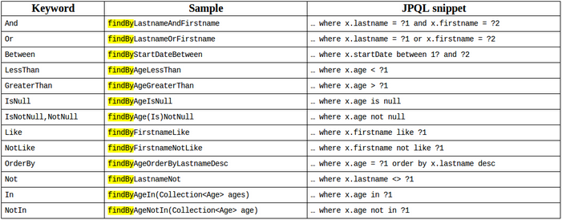
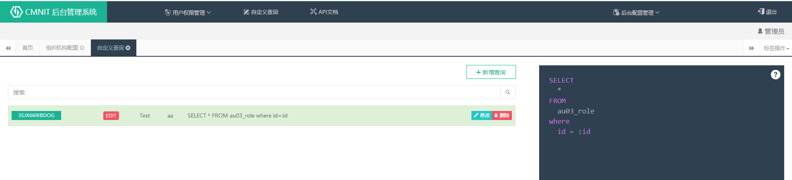
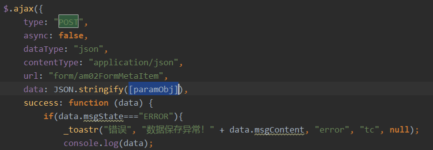
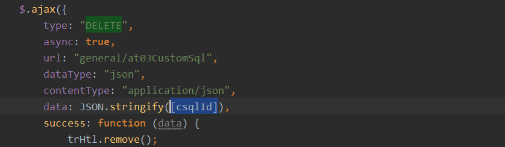
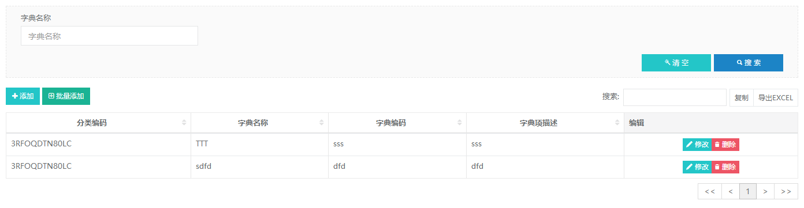
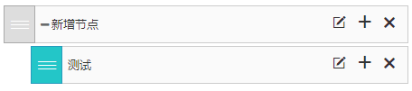

1. 工程目录说明
├─java│ └─com│ ├─boot│ │ ├─aoplistener AOP事件监听和处理│ │ ├─common 通用类，数据统一封装，统一异常类等│ │ ├─config 基于springboot的不同配置类│ │ ├─constant 统一参数配置，全局变量│ │ ├─eventlistener 事件监听和处理│ │ ├─module 模块目录，根据模块创建对应子目录│ │ │ ├─sys 系统模块（通用错误处理，业务相关的工具类等）│ │ │ │ ├─controller │ │ │ │ └─service│ │ │ ├─datatables 配合前端datatable.js插件使用，包含分页查询等│ │ │ ├─auth 权限验证模块，基于shiro实现│ │ │ │ ├─controller 用户登录，权限分配等│ │ │ │ ├─principal shiro认证类│ │ │ │ └─service│ │ │ ├─file 文件操作模块│ │ │ │ ├─controller│ │ │ │ └─service│ │ │ ├─form form表单生成模块│ │ │ │ ├─controller│ │ │ │ └─service│ │ │ ├─general 常用模块（数据字典等）│ │ │ │ ├─controller │ │ │ │ └─service│ │ │ ├─*##* 其他模块，根据需要对模块进行规划│ │ │ │ ├─controller│ │ │ │ └─service│ │ │ └─websocket websocket模块│ │ │ ├─controller│ │ │ └─service│ │ ├─repository 数据库存储相关，所有与domain相关的po、vo、dao、qo在此目录下│ │ │ └─common ID生成器和JPA解析操作│ │ ├─scheduler 定时器│ │ ├─utils 非业务相关的工具类│ │ └─web │ │ ├─filter 过滤器│ │ ├─init 系统初始化│ │ └─listener 监听器 │ └─codegen 代码生成器（已拆出）└─resources 如果前后端分离，则此目录不需要 ├─META-INF └─static ├─css ├─img ├─js ├─page └─plugins2. 数据库创建规则
数据库表名称和字段名称必须为字母或数字，字母大写，可用“_”分隔单词，字段名不能以数字开头。
数据库表名称以
两位字母+两位数字_表说明格式命名，如：AF01_FILE_STORE，其中前两位字母用于分类，表示表的作用模块（A开头的表为系统预留，业务相关表名称，首字母不能以A开头）。数据表中必须有以下字段:
ID:为20位字符型，设置为主键key，为字符类型。OPR_CRT_TIME:记录创建时间 datetime类型，不需要设置默认时间，由程序在创建时分配。
关于数据表中的时间类型，原则上不使用时间戳（timestamp）类型，以MYSQL为例，可使用以下两种时间类型：
- Date型（用于存储年月日）
- DateTime型（用于存储年月日时分秒）
3. 开发规范
Java命名规则
- 数据库实体映射类必须以
PO为结尾，由系统自动生成，仅当后台数据库变化时，才允许对PO、VO、QPO做相应修改。 - 向前端传输的POJO类必须以
VO为结尾，由系统自动生成，用户可根据需要添加需要的VO类，但不要修改和删除自动生成的VO类。 - Q***PO类为QueryDSL使用，与PO类字段基本一致，默认不需要做修改。
- 数据库实体映射类必须以
module目录（模块）下应为每个功能模块单独创建目录，目录中至少应当包含controller，sevice文件夹，sevice下应为业务接口和接口实现类（接口实现类放入impl目录下），接口命名以
I开头，接口实现类以Impl结尾。controller类以Ctl结尾。sevice服务的类注解@Service必须加value参数，如：使用@Service("am01FormMetaService")，而不是只写做@Service。当自动注入Sevice时，使用@Resource(name = "customNativeSqlService")方式添加注解，而不是使用@Autowired。
- 通过
Resource+名称的注入方式，在IDE中可通过`Ctrl+点击跟踪到具体的接口实现类，而不是定位到接口。
xxxxxxxxxx//service类声明("af01FileStoreService")public class Af01FileStoreServiceImpl extends BaseService implements IAf01FileStoreService {……｝//注入service(name = "af01FileStoreService")private IAf01FileStoreService af01FileStoreService;- 通过
service服务类，必须扩展类
BaseService，BaseService已注入EntityManager和JPAQueryFactory，根据需要使用。VO、PO、QO和基础的增删改查service、controller由代码生成器自动生成，可根据需要在生成的service和controller上进行方法扩展，但不要修改自动生成的代码。
DAO若无特殊查询，不需要更改，若需要扩展，可通过以下方式进行（优先使用jpa配置的方式）：
通过使用Spring-data-jpa配置方法名实现，具体配置方式参考
com.boot.repository.Au01UserDAO类中的`findByUserName ；以下为jpa方式配置说明。 QueryDSL方式，具体可参照网上资料。示例如下(更新操作)：
xxxxxxxxxx//以下对库中id在ids列表中的记录进行修改//其中QAm02FormMetaItemPO类为系统自动生成public Integer removeEntity(List<String> ids) {QAm02FormMetaItemPO qpo = QAm02FormMetaItemPO.am02FormMetaItemPO;return Long.valueOf(queryFactory.update(qpo).where(qpo.id.in(ids)).set(qpo.metaDes, "描述").set(qpo.oprCrtTime, new java.sql.Date(System.currentTimeMillis())).execute()).intValue();}除以上两种方式外，可以通过写JPQL（与HQL相似）或原生SQL的方式进行扩展查询，在DAO类中通过以下几种方式实现数据库操作。
x//基于实体PO的方式查询，不支持复杂查询("from Uc08DataDictEntity u where dictCode = ?1")List<Uc08DataDictEntity> findTest1(String dictCode);//原生SQL方式，不推荐使用，可通过界面配置后，通过URL调用来查询,见下一章节(value="select * from uc08_data_dict u where dict_code = :first and application_code =:appCode", nativeQuery = true)List<Uc08DataDictEntity> findTest2(("first") String dictCode, ("appCode") String appCode);//更新操作("update Uc08DataDictEntity set applicationCode = ?1")int dictUpdate(String appCode);
不要在controller和service中拼接SQL，SQL语句只可以出现在DAO类中，原生SQL查询，可在提供的管理界面上通过配置SQL实现，可通过
http://XXX/项目名称/general/sqlQuery?sqlCode=***方式调用查询语句。
配置规则如下：
- 使用
:参数名的方式替换jdbc中的?，如：select user_name from table_name where user_id=:userid，其中:userid为调用url时传入的参数名称，如：XXX/sqlQuery?sqlCode=XXX&userid=aaa。 - 若sql中使用
like过滤查询，则配置如下：select user_name from table_name where user_id like% :regx %，其中:regx前后需要加空格。 - 若sql中使用
in过滤查询，则配置如下：select user_name from table_name where user_id in (:userids)，其中:userids前台传入时，url传入多个userids参数，如：XXX/sqlQuery?sqlCode=XXX&userids=aaa&userids=bbb，则userids会在后台将userids封装为list传给sql。 - 执行结果返回时，会将数据库中字段名转换为
通用格式输出，如：库中字段名为USER_NAME，返回结果为userName。 - 其他使用规则，请搜索Spring NamedParameterJdbcTemplate的配置。
- 使用
VO用于页面展示，作用是对PO进行敏感字段过滤，或多个PO组装成一个VO提供给前台。自动生成的VO与PO属性名相同，PO的date、datetime类型，在VO中加上
@JsonFormat(locale="zh", timezone="GMT+8", pattern="yyyyMMddHHmmss")的注解，目的是将Date类型转为String类型向前端输出，默认生成的格式为yyyyMMddHHmmss类型，若数据库中为Date型，可手工修改为yyyyMMdd。前台通过URL传入的CURD参数也参照此种格式。PO中用户表有密码，但传给前台时（VO），密码置空，过滤敏感字段；
用户表由用户基本信息（userPO）和用户权限信息(rolePO)组成，多个PO组装为一个VO向前台返回。
为保持一致性，向前端返回的对象必须封装为
HttpOutMsgBean对象。日志使用@slf4j注解形式引用日志类，通过在类上添加@slf4j注解（引入lombok.jar，见10.1章节），在需要生成日志处，直接调用log.error/log.info方法生成日志，log实例由@slf4j负责注入。
4. 数据的增删改查
4.1 Query
查询通过[GET]方式提交。
通过代码生成器，项目已自动生成基本的查询，可通过URL传参来查询数据，通过URL调用时，如果需要过滤，则将PO类中的属性名做为参数名传入，系统将传入的参数做为过滤条件进行解析并查询。
如，用户信息PO类(Au01UserPO)，包含以下属性：
xxxxxxxxxx/** * 登录用户名 */(name = "USER_NAME", nullable = true, length = 20)private String userName;/** * 创建时间 */(name = "OPR_CRT_TIME", nullable = true, length = 19)private Date oprCrtTime;查询时，PO的类名Au01UserPO，URL查询时使用转换后的名称au01User，转换规则为首字母小写，去除PO后缀。
此转换规则即：数据库表名称AU01_USER，下划线去除，单词首字母大写，名称首字母小写。
xxxxxxxxxx1. 根据用户名过滤查询查询用户名为ABC的记录：[GET] /XXX/au01User?userName=ABC查询用户名为ABC(EQ可省略)的记录：[GET] /XXX/au01User?userName.EQ=ABC查询用户名以A开头的记录(like 'A%')：[GET] /XXX/au01User?userName.ST=A查询用户名以C结尾的记录(like '%C')：[GET] /XXX/au01User?userName.ED=C查询用户名包含B的记录(like '%B%')：[GET] /XXX/au01User?userName.LK=B查询用户名为A或B的记录[GET] /XXX/au01User?userName.EQ=A&userName.EQ=B&op=OR解析后： where userName='A' or userName= 'B'[GET] /XXX/au01User?userName.IN=A&userName.IN=B解析后： where userName in ('A','B')2.根据创建时间过滤查询如用户创建时间字段oprCrtTime为日期类型，查询示例如下：查询创建时间为2018-11-01 12:01:01的用户：[GET] /XXX/au01User?oprCrtTime=20181101120101查询创建时间大于2018-11-01的用户：[GET] /XXX/au01User?oprCrtTime.GT=20181101查询创建时间大于2018-11-01并且小于2018-11-10的用户：[GET] /XXX/au01User?oprCrtTime.GT=20181101&oprCrtTime.LT=201811103.多条件综合查询多条件查询时，各条件之间默认为AND关系，若添加op=OR参数，则为或查询。如：查询用户名以A开头或以C结尾的用户：[GET] /XXX/au01User?userName.ST=A&userName.ED=C&`op=OR`解析后： where userName like 'A%' or userName like '%C'
xxxxxxxxxx参数后缀说明"EQ": //等于"NEQ": //不等于"GT": //大于"LT": //小于"GE": //大于等于"LE": //小于等于"LK": //LIKE 日期类型不支持此后缀"ST": //开始于 日期类型不支持此后缀"ED": //结束于 日期类型不支持此后"NLK": //NOT LIKE 日期类型不支持此后"NST": //不开始于 日期类型不支持此后缀"NED": //不结束于 日期类型不支持此后"NU": //IS NULL 参数任意，仅查询数据库中为NULL的数据，空字符值（""）的记录不返回，查询为“”的记录，使用'XX.eq='，=后不加任何字符。"NNU": //IS NOT NULL 参数任意，仅查询数据库中不为NULL的数据，空字符值（""）的记录也会返回"IN": //IN /XXX/au01User?userName.IN=A&userName.IN=B"NIN": //NOT IN /XXX/au01User?userName.NIN=A&userName.NIN=B
- OR查询
查询时，除将PO类中的属性做为参数名传入外，还有以下几个特殊参数：
xxxxxxxxxxop：用于操作查询是AND还是OR，当且仅当op=OR时，查询为OR关系。如查询用户名为ABC或为CD的记录：[GET] /XXX/au01User?userName=ABC&userName=CD&op=OR
- 分页查询
若进行分页查询，通过URL传入分页参数(page、size、sort)，其中page和size必须同时出现，sort可为空。page和size任一为空，则不分页。
xxxxxxxxxxpage: 第几页,从0开始，若为空，则不分页；size: 每一页的行数，若为空，则不分页；sort: 排序字段,可为空，以property;property(,ASC|DESC)的方式组织，如sort= firstname;lastname,desc 表示在按 firstname 正序排列基础上按lastname倒序排列。如：查询创建时间在20181101和20181110之间的数据，按operCrtTime倒排序，取第1页的10行记录：[GET] /XXX/au01User?oprCrtTime.GT=20181101&oprCrtTime.LT=20181110&page=0&size=10&sort=oprCrtTime,desc
- 记录数查询
记录数查询通过[HEAD]方式提交，查询参数同QUERY查询相同。
xxxxxxxxxx[HEAD] /XXX/au01User?userName=ABC&userName=CD&op=OR解析为： select count(*) from AU01_USER where userName='ABC' or userName = 'CD'
4.2 Update & Insert
更新和插入均通过[POST]方式提交，当数据库存在此ID时，则更新ID相同的记录，若库中无此ID记录，则做为新行插入（自动生成新ID）。
xxxxxxxxxx[POST]： /XXX/au01Userdata： [{"id": "1","userNameCn": "ONE_CNA","userName": "ONEA","password": "ONEP","phoneNumber": "","email": "","userAskKey": "567d2233-df77-11e8-b278-0021ccb90db0","userExtend": "","accountExpired": "N","accountLocked": "N","accountEnabled": "Y"}]
通过ajax提交时，需要使用JSON.stringify将对象转为字符型。
提交的内容应该为对象列表（==即后端程序接收的是一组记录列表==），若只更新或插入一条记录，则需要在数据前后加'['和']'。
4.3 Delete
删除数据通过[DELETE]方式提交，参数内容为要删除记录的id列表。
xxxxxxxxxx[DELETE]： /XXX/au01Userdata： ['id1','id2']
通过ajax提交时，需要使用JSON.stringify将对象转为字符型。提交的内容应该为对象列表，若只需要更新或插入一条记录，需要在数据前后加'['和']'。
4.4 时间字段的处理
日期字段的增删改查，通过前台URL传入后台，后台判断某字段为日期格式，会自动识别并转为日期类型，可使用以下几种规则传入日期的字符串格式，但建议只使用yyyyMMdd和yyyyMMddHHmmss格式。
xxxxxxxxxx yyyy-MM-dd yyyy-MM-dd HH yyyy-MM-dd HH:mm yyyy-MM-dd HH:mm:ss yyyyMMdd yyyyMMddHH yyyyMMddHHmm yyyyMMddHHmmss4.5 ID生成
后端程序会自动生成记录的ID字段用于数据库存储，ID生成策略为雪花算法，生成12-13位的唯一ID，为保证前后端生成ID的格式一致，前端生成ID时，调用js代码_SnowflakeIdGenerator.nextId()生成。
一般情况下，前端js不需要生成记录的ID字段，由后台自动分配即可；当前端生成了一条记录，后续要使用到ID字段用来加载数据，此时可由前端负责ID生成。
后端程序会判断前端传入的记录，若传入记录没有ID字段，则后端生成，若前端有ID字段，则保持前端ID不变。
5. 获取实体表的元数据
获取各实体表或自定义form表单的配置（配合custom-form-meta.js使用），通过调用meta/{formCodes}获取，如果一次要获取多个，则formCodes使用逗号分隔，返回结果使用data.msgContent.{formCode}.formItems获取，formCode为传入formCodes列表中的其中一个值。如下：
xxxxxxxxxx $.ajax({ type: "GET", async: true, url: "meta/au01User,au02Organization,au03Role", success: function (data) { _formUser = data.msgContent["au01User"].formItems; _formOrg = data.msgContent["au02Organization"].formItems; _formRole = data.msgContent["au03Role"].formItems; } });6. 文件上传下载
参考类com.boot.module.file.controller.Af01FileStoreCtl。
文件上传：[POST] /file/upload，参数为MultipartHttpServletRequest，一般前端js上传控件均支持，建议dropzone.js。
前台上传文件时，若js控件支持修改传输中的文件名，则将文件名修改为fileId|name格式，fileId即为文件存储时的fileId，也是文件下载时的传入参数fileId。
文件下载：[GET] /file/download，参数为fileId和fileName，其中fileName可空。
7. Websocket使用
略
8. 事件监听
事件监听有以下作用：
- 在多个操作结束以后，都需要调用另外同一个操作时。如，修改组织机构、角色、用户时都需要刷新权限，则可将刷新权限的操作提取出来；在修改组织机构、角色、用户时，发布事件，通知刷新权限操作执行。
- 可以对业务进行逻辑隔离，不需要在一个模块内嵌入另一个模块的逻辑代码，只需要发布事件即可，不需要关心最终会触发什么操作。
8.1 EventListener
使用方式参照类com.boot.module.auth.service.impl.Au04PrivilegeServiceImpl。
需要实现两个类，一个为扩展自ApplicationEvent的类，本例中为PrivilegeChangeEvent，无业务逻辑；另一个为具体执行事件的类，本例中为PrivilegeChangeEventListener，逻辑均在此类中实现。

8.2 AOPListener
与EventListener的作用相同，不同点在于使用注解方式触发事件，并且只需要实现一个扩展自IEventListener的监听类。
使用方法： 1、在需要监听触发的方法上添加@CusAnnotation(behaviorDes="XXX")注解。其中XXX表示要执行的监听类。 2、编写监听类实现IEventListener接口，当配置注解的方法执行时，会调用此实现类中的方法执行。 注意： 由于基于反射生成类，因此无法在IEventListener通过@Autowired实现注入Bean或Service,可使用 SpringBeanTools.getBean方式获取到service
9. 关于PO、VO转换
本工程现有PO、VO转换均使用com.boot.module.sys.ConvertBeanTools中的方法实现，仅适用于参数名称和类型相同的转换，若有更复杂的转换，可以通过编写代码或使用mapstruct框架实现。
10. 其他组件
10.1 Lombok
Lombok是一种Java™实用工具，可用来帮助开发人员消除 Java 的冗长，尤其是对于简单的 Java 对象（POJO），它通过注解实现通用代码生成。
IDE设置，需要对IDEA进行以下配置：
- 安装
lombok plugin插件
- 安装
使用方法：
- 日志记录，通过在类上注解@Slf4j实现，注解后，可直接使用log.error，log.info等进行日志记录。
- JAVA类，通过在类上加@Data注解，生成setter,getter,equels, toString等方法。
- 其他的注解，请参照官网。
10.2 API文档
项目使用Swagger2自动api生成，访问地址为http://XXX/项目名称/swagger2

10.3 QueryDSL
QueryDSL方式查询数据库
参考 http://www.querydsl.com/static/querydsl/latest/reference/html/
11. 前端组件
11.1 Form表单生成
11.2 DataTables

使用方式参照dictionary_admin.html，其他函数参考custom-dataTables.js。
通过以下方式生成表格：
_builderDataTab(partentDivId, tabObj, customOption, editDataFunc, delDataFunc, addDataFunc) ;
其中：
- 参数partentDivId：在此ID元素下生成表格
- 参数tabObj：表的元数据信息，数据来源参见“第5章、获取实体表的元数据”。
- 参数customOption：对表格的操作配置
- 函数参数editDataFunc：编辑一行记录时，调用此函数
- 函数参数delDataFunc：删除一行记录时，调用此函数
- 函数参数addDataFunc：添加一行记录时，调用此函数
xxxxxxxxxx//参数配置如下：var customOption:{ "tabClass":"table-bordered",//用于在表格上添加class属性 "globalSearch":"N",//是否显示全局搜索框(右上角的全局搜索)，后台分页时，此功能无用 "hasFooter":"Y", //是否显示底部标题(仅为标题，非sum求和) "ajaxUrl": "GET:wordcode/wcodeList.html?wcodeGroupName=TESTWCODE",//数据来源,可为空，为空表示只将页面上的内容进行格式化，不加载数据。需要加上GET、POST等前缀，如果不加则默认为GET "ifExp":"Y" //是否导出 "fileName":"" //导出文件名 "ifEdit":"Y" //是否显示修改按钮 "ifDel":"Y" //是否删除; "ifAdd":"Y" //是否增加, "ifServerPage":"Y" //是否后台分页，Y：通过ajaxurl查询数据，后台分页；N一次性通过ajaxUrl加载数据后前台分页。 "addRowsDefVal":{dictDes:"aaaa",dictName:"bbbb"} //添加行时的默认值，当某些字段不可见或不可编辑，但又必填时填充值 "filterFields":["字段1","字段2"] //生成过滤字段，字段名称即为tabObj中的metaCode }//示例：后台分页var customOption = { "tabClass": "table-bordered", "hasFooter": "N", "ajaxUrl": "GET:datatables/am02FormMetaItem", "ifExp": "Y", "fileName": "文件名", "ifEdit": "Y", "ifDel": "N", "ifAdd": "Y", "ifServerPage":"Y", "addRowsDefVal":{dictDes:"aaaa",dictName:"bbbb"},//添加行时的默认值 "filterFields":["metaHtmlType", "metaCode"] };//示例：前台分页var customOption2 = { "tabClass": "table-bordered", "globalSearch":"Y",//右上角的全局搜索 "hasFooter": "N", "ajaxUrl": "GET:form/am02FormMetaItem", "ifExp": "Y", "fileName": "文件名", "ifEdit": "Y", "ifDel": "N", "ifAdd": "Y", "ifServerPage":"N", "addRowsDefVal":{dictDes:"aaaa",dictName:"bbbb"},//添加行时的默认值 "filterFields":["metaHtmlType", "metaCode"] };11.3 Tree

使用方式参照dictionary_admin.html，其他函数参考custom-tree.js。
通过以下方式生成树型结构：
_buildTree(partentDivId, cusTreeSetting, treeObj);
其中：
- 参数1（partentDivId）：在此ID元素下生成树
- 参数2（cusTreeSetting）：参数配置
- 参数3（treeObj）：树节点的数据结构
xxxxxxxxxx//cusOpt格式var cusTreeSetting = { nodeId:"stdElementId", childrenName: "subStdElementList", nodeName: "stdElementName", ifEdit: true, ifAdd: true, ifRemove: true, ifRename: true, addNodeFun: null,//添加节点的函数,有两个参数，2为添加后的节点，1为新加节点的父亲节点 clickNodeFun: null//点击节点的函数 beforeRemoveFun,//删除前 beforeDragFun,//拖拽开始 onRemoveFun,//删除 onDropFun,//拖拽结束后 onRenameFun//重命名}//数据格式var dataJson= { "stdElementName" : "根节点", "stdElementId" : "ed111716-43a6-497c-8937-39c682baf9c8", "subStdElementList" : [ { "stdElementName" : "新节点0", "stdElementId" : "a3ccd83d-1348-4ee4-81fd-4327ce03a826", "subStdElementList" : [ { "stdElementName" : "新节点1", "stdElementId" : "f43ec125-f25f-4732-9b39-13c92fa99ae5" } ] } ] }11.4 LabelTree

使用方式参照organization_admin.html，其他函数参考custom-label-tree.js。
通过以下方式生成树型结构： _buildLabelTree("org_tree", orgTreeSetting, treeObj);
xxxxxxxxxxlet orgTreeSetting = { nodeId: "nodeId", childrenName: "subNodeList", nodeName: "nodeName", maxDepth: 5, //最大深度 ifEdit: true, //是否允许编辑 ifAdd: true, //是否允许添加节点 ifRemove: true, //是否允许移动节点 ifRename: true, //是否允许重命名节点 addNodeFun: function (node) {},//添加节点的函数 onRemoveFun: function () {},//删除节点的函数 onDropFun: function () {},//移动节点的函数 onRenameFun: null,//重命名 clickNodeFun: function (node) {}, //点击节点的函数 editNodeFun: function (li) { treeEditOrg(li); }//编辑节点，有此函数时，重命名函数不起作用};其中treeObj内容如下：var treeObj= [ { "nodeName": "新增节点", "nodeId": "3W4F39WTTIIO", "subNodeList": [ { "nodeName": "测试", "nodeId": "3Q1UGOWOW9HC" } ] } ]